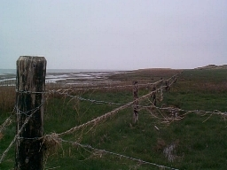
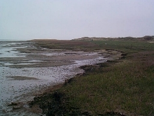
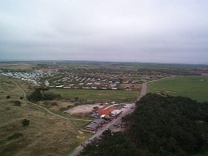
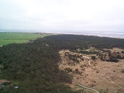
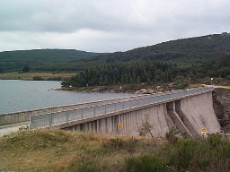
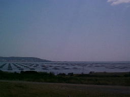

Nature meets Culture
In Europe, which is where I live, there is hardly a place to
find where the land is not shaped by humans. Maybe that is the
reason why I am fascinated with the border between nature and
culture. There are still a few places where these borders exist.
On these pages I have documented a few. Click on a picture to
enlarge it. After these images continue to Insel Hombroich or pictures of Bonsai.
|  |
|  |
On the south side of the island of Ameland,
in the north of the Netherlands, a patch of
meadow is situated adjacent to the Wadden
estuary. These pictures where taken in May
2000.
|
|
| Also on the island of Ameland, a view from the
lighthouse exposes four different types of land: dunes,
housing, farmland, woods. Which of these is culture and
which is nature? |
 |
 |
|  |
| In the south of France, in the
lake of, there is a dam. It stands as a solid artefact
surrounded by a national reserve. |
|  |
| Near the town of Sete, in the south of
France, oyster fields are set up in grid like manner. |
Continue to Insel Hombroich, or go
back to my home page.
{kind=link}
{kind=link}
{kind=link}
{kind=link}
{kind=link}
{kind=link}